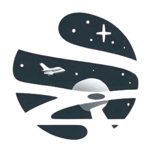
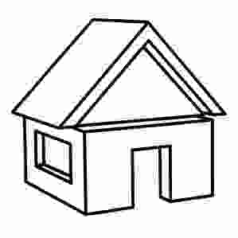
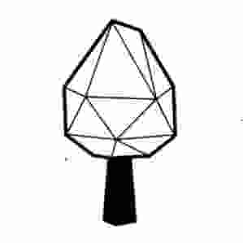
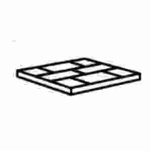

  <ion-content>
    <canvas id="renderCanvas" touch-action="none"></canvas>
      <div id="joystick-container" [hidden]="babylonScene?.modeConstructor"
           style="position: absolute; width: 70%; height: 40%; z-index: 5;bottom: 1px;margin-left: 15%;"></div>  

      <div class="optionsGame">
        <button (click)="menu()" class="menu btn"><ion-icon name="menu-outline"></ion-icon></button>
        <button class="run btn" (pointerdown)="babylonScene?.jump()">
          <ion-icon name="walk-outline"></ion-icon>
        </button> 
      </div>
      <div *ngIf="babylonScene?.modeConstructor">
        <div class="runOptionsLeft">
          <ion-icon class="undo" name="arrow-undo-circle-outline" (click)="babylonScene?.modifySelected('rotationLeft')"></ion-icon>
          <ion-icon class="redo" name="arrow-redo-circle-outline" (click)="babylonScene?.modifySelected('rotationRight')"></ion-icon>
          <ion-icon class="down" name="arrow-down-circle-outline" (click)="babylonScene?.modifySelected('moveUp')"></ion-icon>
          <ion-icon class="up" name="arrow-up-circle-outline" (click)="babylonScene?.modifySelected('moveDown')"></ion-icon>
          <ion-icon class="forward" name="arrow-forward-circle-outline" (click)="babylonScene?.modifySelected('moveLeft')"></ion-icon>
          <ion-icon class="back" name="arrow-back-circle-outline" (click)="babylonScene?.modifySelected('moveRight')"></ion-icon>
          <ion-icon class="outline" name="save-outline" (click)="babylonScene?.saveModify()"></ion-icon>
        </div>
        <div class="runOptionsRight">
          <ion-icon name="arrow-undo-circle-outline" (click)="addMesh('houses')"></ion-icon>
          
           
        </div>
      </div>

      <div id="listMeshes" *ngIf="listMeshes">
        <ion-icon name="arrow-down-circle-outline" (click)="listMeshes = false"></ion-icon>
        
        
        
        
        >
        <hr>
        
        
        
        
        

          
        
      </div>
          
      <div class="loading-overlay" *ngIf="isLoading">
        <div class="spinner"></div>
      </div>
      
      <div class="center" id="menuOptions" style="display: none;">
        <div class="menuDiv">
          <button class="btn close" (click)="menu()"><ion-icon name="close-circle-outline"></ion-icon></button>
          <hr>
          <button class="optionMenu" (click)="changeAccessory('hat');menu()">hat</button>
          <button class="optionMenu" (click)="cameraOptions();">Change Camera</button>
          <div id="cameraOptionsId" style="display:none;width: 100%;border-radius: 10px;padding:5px;margin:10px;height: auto;background-color: aliceblue;"> 
            <button class="optionMenu secondOption" (click)="enableVr()">Realidad Virtual</button>
          </div>
          <button class="optionMenu" (click)="position();menu()">Gafas</button>
          <button class="optionMenu" (click)="scale();menu()">scale</button> 
          <button class="optionMenu" (click)="babylonScene?.runnerMode();menu()">Runner</button> 
          <button class="optionMenu" (click)="babylonScene?.startBirdMiniGame();menu()">Bird Game</button>
          <button class="optionMenu" (click)="navigateToInfiniteRunner();menu()">Infinite Runner</button>
          <button class="optionMenu" (click)="navigateToMountainRunner();menu()">Mountain Runner</button>
          <button class="optionMenu" (click)="babylonScene?.modeConstructorOn();menu()">construction</button>  
          <button class="optionMenu" (click)="inicio()">Inicio</button> <!-- *ngIf="babylonScene.info.type === 'finca'"-->
        </div>
      </div> 
      <div id="minimap-container" hidden="true">
        <canvas id="minimapCanvas"></canvas>
      </div>
      <div *ngIf="babylonScene?.done">
        <div class="loading-overlay">
          <ion-icon name="checkmark-circle-outline"></ion-icon>
        </div>
      </div>
</ion-content> 
